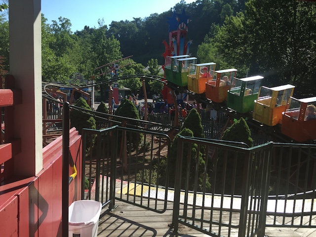

| |

Sideshow Spin Review

We're here at Dollywood. For you credit whores, there's Sideshow Spin. The park's kiddy coaster. Well, the parks old kiddy coaster. They have recently gotten rid of this ride and put in a new kiddy coaster. Which is good because this thing was AWFUL!!! Even by kiddy coaster standards, it was. You climb into the cars, and barely fit. And we're off!!! We start to climb the lifthill. We struggle, but we're in the little car that could. You're not sure if you're going to make it over the hill, or if the hill itself is even bigger than you if you're a tall dude, but we make it. You then go down a helix for the first drop and around a turn. And yeah. That's the ride. Though you do get multiple laps on it. You can easily tell that this coaster is not made for adults to ride. Hey, it may be boring, but at least it's not a painful kiddy coasters. But even so, it's still just a tiny kiddy coaster. But if you're upset that you can't get this credit at Dollywood. A: You're a SUPER CREDIT WHORE!!! I mean, you REALLY F*CKING WHORE OUT!!! But hey. You wanna be a super credit whore, more power to you buddy. B: There are clones of this out there if you care about the experience. So go ride a clone you filthy filthy whore.
1/10
Opened at Dollywood in 2005
Moved to Kentucky Shores Family Fun Center in 2017
Died: 2018
Built by: L&T Systems
Last Ridden: June 25, 2016
I have ridden this exact same ride at the following parks.
Liseberg
Sideshow Spin Photos

Home
|